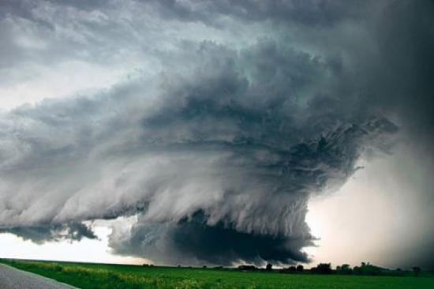
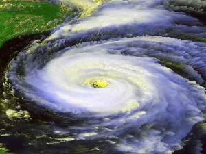

-
Cuprins
- 1.Ce sunt ciclonii și cum apar ei?
- 2.El Nino
- 2.1 Apariția sa
- 2.2 Efectele sale
Ce sunt ciclonii și cum apar ei?
Ciclonii tropicali sunt furtuni violente, formate între 5-15° lat. N și S, având viteze ale vântului de peste 118 km/h. Acestea poartă denumiri diferite de la o regiune la alta: „uragan”(hurricane) în Oceanul Atlantic, taifun în Oceanul Pacific și „ciclon tropical” în Oceanul Indian și în lungul coastelor Australiei. În cadrul ciclonilor, care pot să aibă un diametru cuprins între 500 și 1000 km, mișcarea maselor de aer are un caracter circular și prezintă, uneori, traiectorii neașteptate și intensificări locale greu de anticipat. În partea centrală, numită „ochiul ciclonului”, vântul este slab și predomină timpul senin; coroana principală cu un diametru de până la 200 de km, este caracterizată prin violențe și ploi abundente. Spre exterior viteza vântului și cantitățile de precipitații tind să se diminueze treptat.
Ele se formează deasupra oceanelor, între 8° și 15° latitudine nordică, dar nu în apropiere de Ecuator, unde forța Coriolis este extrem de slabă. Majoritatea uraganelor iau naștere în interiorul calmelor ecuatoriale, o zonă îngustă caracterizată de perioade de calm intermitente, brize ușoare și vijelii frecvente, aflată între alizeele ce bat de la N-E în emisfera nordică și dinspre S-E în cea sudică. Deoarece calmele ecuatoriale ale Atlanticului sunt situate în mare parte la nord de Ecuator, uraganele nu apar în Atlanticul de sud. În oceanul Pacific calmele ecuatoriale se extind atât la nord cât și la sud de Ecuator; astfel uraganele se pot produce atât in Pacificul de nord cât și în cel de sud.
Fenomenul El Nino
Apariția sa
El Nino este un fenomen complex de interacțiune între apele Oceanului Planetar și atmosfera, care se produce în zona tropicală a Oceanului Pacific. A apărut din Pacificul Tropical, spre sfârșitul anului 1997, aducând cu el mai multă energie decât un milion de bombe de tipul celei de la Hirosima. Timp de opt luni, 1997-1998, marele El Niño a dat peste cap toate caracteristicile climatice din toată lumea, ucigând, aproximativ 2100 de persoane si producând pagube materiale de cel putin 33 miliarde de dolari. Acest fenomen se manifestă prin încălzirea anormală, la suprafață, a apelor Oceanului Pacific, care se deplasează dinspre partea vestică spre partea estică sub impulsul unor mase de aer cu aceeași directie de mișcare. In acest fel sunt perturbate vânturile alizee, fenomen care generează modificări climatice majore, in special in zonele tropicale. Aceste perturbări se manifestă prin secete, furtuni violente, însoțite de inundații și cicloane puternice. Încălzirea apei oceanului se produce în preajma Crăciunului, fenomenul fiind denumit de pescarii din Peru si Ecuador ‘El Nino’ (Copilul Domnului). Acest fenomen se repetă la intervale neregulate, cuprinse intre 3 și 7 ani, iar încălzirea poate să persiste 1 – 2 ani. Oamenii de știință au denumit fenomenul El Nino ‘ Oscilația Sudica’ sau, prescurtat ENSO ( El Nino Southern Oscilation), pentru a pune în evidență caracterul fluctuant al acestor încălziri ale apelor oceanului din emisfera sudică.
Efectele sale
Datorită dezvoltării tehnologice, El Nino este ușor de prezis, iar efectele pozitive ale acestui fapt sunt multiple. În nordul Peru-ului, avertismentele au permis multor fermieri și pescari să folosescă părțile pozitive ale lui El Niño. Pe pământuri care de obicei erau deșertice a crescut iarbă, permițând creșterea vacilor. Orezul și fasolea au putut fi cultivate în zone prea aride pentru ele; pescarii au putut planifica pescuitul în apele mai apropiate de coastă, de obicei prea reci. Efectele previziunilor pot fi foarte importante. De exemplu, crescătorii de cafea din Kenia au o cerere mai mare pentru cafeaua lor când seceta distruge recoltele din Brazilia și Indonezia. Producția de ulei de palmier din Filipine scade în timpul lui El Niño. Tările care prevăd aceste evoluții pot prospera. Cel puțin, pregătirea poate salva vieți. Chiar și în săracul Peru, construirea de canale și acumularea de rezerve a salvat sute de vieți în 1997-1998. Multe zone afectate s-au putut pregăti pentru inundații și foc, migrații și epidemii.


